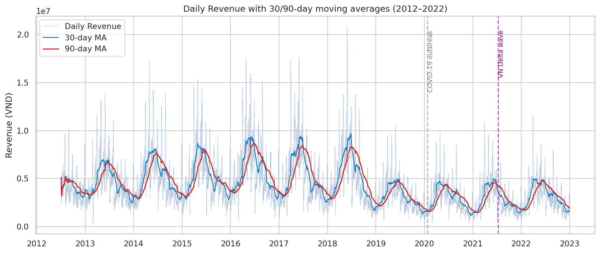
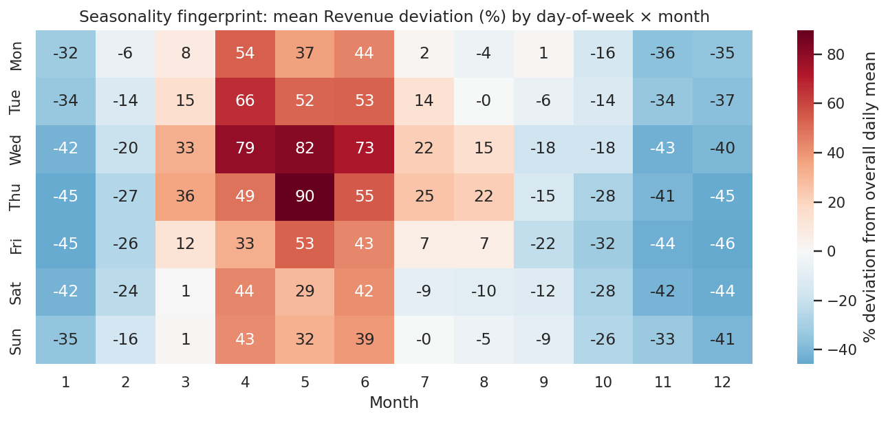
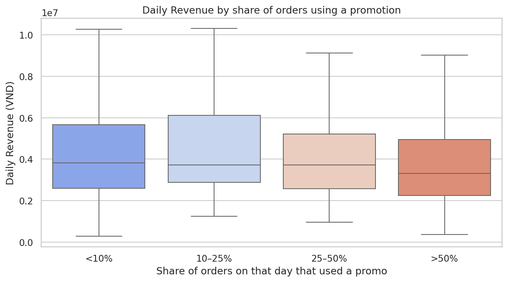
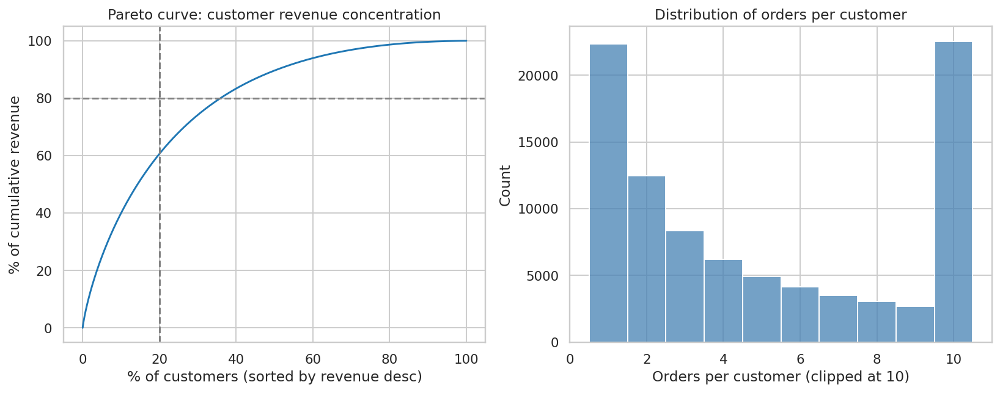
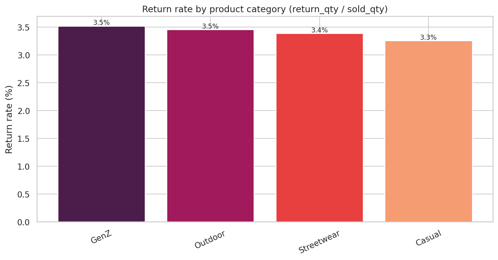
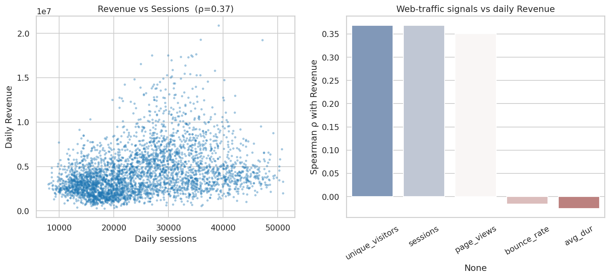
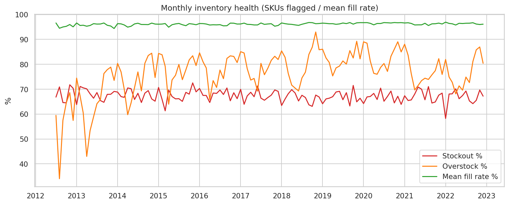
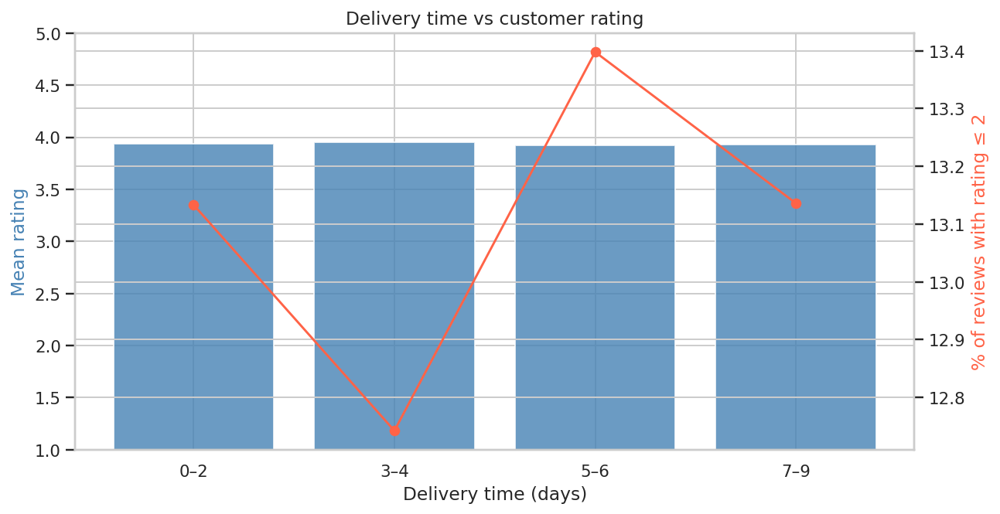
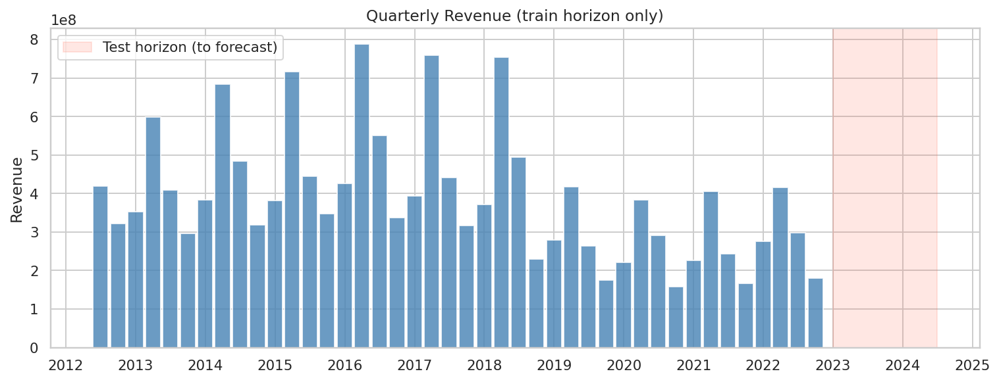

Đội: Data Science Team
Ngày: 2026-04-17
Phạm vi dữ liệu: 15 bảng CSV, giai đoạn 04/07/2012 – 31/12/2022 (3,833 ngày)
Mục tiêu dự báo: Revenue hàng ngày cho 01/01/2023 – 01/07/2024 (548 ngày)
Báo cáo này tổng hợp những insight phi hiển nhiên rút ra từ EDA (xem
eda.ipynb/eda.html), đối chiếu với bối cảnh kinh doanh, và đưa ra khuyến nghị hành động. Mỗi kết luận đều có bằng chứng định lượng hoặc biểu đồ kèm theo. Báo cáo viết theo tinh thần System Thinking → Break Patterns → Insight to Direction của Gridbreakers.
Một công ty thương mại điện tử thời trang Việt Nam cần dự báo doanh thu thuần hàng ngày cho 18 tháng tiếp theo (548 ngày) để:
| Khía cạnh | Định nghĩa |
|---|---|
| Biến mục tiêu | Revenue (float, VND) — doanh thu thuần hàng ngày trong sales.csv. |
| Đơn vị quan sát | 1 ngày = 1 dòng (time-series univariate với exogenous). |
| Horizon | 548 ngày (2023-01-01 → 2024-07-01). |
| Train | 3,833 ngày (2012-07-04 → 2022-12-31). |
| Metrics | MAE, RMSE, R² (đánh giá đồng thời). |
| Ràng buộc | Không được xáo trộn thứ tự dòng trong submission.csv. |
Revenue_t không phải một con số đơn lẻ; nó là output của một chuỗi hệ thống:
Web traffic → Sessions/Conversions → Orders → Order_items × Price → Gross Revenue
Promotions (−) Returns (−) COGS (−) Inventory (gate)
Nghĩa là mô hình dự báo tốt phải hiểu cơ chế vận hành chứ không chỉ học pattern time-series. Các insight dưới đây đều hướng tới việc trích chọn feature có tính nhân quả cho mô hình ML giai đoạn sau.
Bằng chứng. Bảng doanh thu năm cho thấy biến động YoY rất khác thường:
| Năm | Revenue (tỷ VND) | YoY % | Margin % |
|---|---|---|---|
| 2016 | 2,104.6 | +11.4% | 15.4% |
| 2017 | 1,911.2 | −9.2% | 11.3% |
| 2018 | 1,850.1 | −3.2% | 16.6% |
| 2019 | 1,136.8 | −38.6% | 11.6% |
| 2020 | 1,054.5 | −7.2% | 16.0% |
| 2021 | 1,043.0 | −1.1% | 9.8% |
| 2022 | 1,169.7 | +12.2% | 12.8% |
Đỉnh doanh thu là 2016 (~2,105 tỷ), sau đó giảm 3 năm liên tiếp, và sụp gần 40% trong 2019 — trước khi COVID-19 bùng phát ở Việt Nam (23/01/2020). COVID chỉ giải thích mức giảm 7% năm 2020, không phải cú gãy 2019.

Ý nghĩa kinh doanh. Có một regime change mang tính cấu trúc (thay đổi mô hình kinh doanh, mất market share, hoặc định vị lại sản phẩm) đã xảy ra khoảng 2018–2019. Điều này có hai hệ quả với bài toán dự báo 2023–2024:
Action: Mô hình cần có time-decay weight hoặc chỉ train trên 2019–2022. Đồng thời, nên có change-point detection (e.g. Bayesian CP / ruptures) để tách regime.
Niềm tin phổ biến trong ngành thời trang Việt là Q4 (Black Friday, Tết) là mùa cao điểm. Dữ liệu cho thấy điều ngược lại:

| Ô (thứ, tháng) có doanh thu lệch cao nhất so với mean ngày | % chênh |
|---|---|
| Thứ Năm, Tháng 5 | +89.9% |
| Thứ Tư, Tháng 5 | +81.6% |
| Thứ Tư, Tháng 4 | +78.5% |
| Thứ Tư, Tháng 6 | +73.2% |
| Thứ Ba, Tháng 4 | +66.0% |
| Ô thấp nhất: Thứ Năm, Tháng 12 | −45.8% |
| Ô thấp nhất: Thứ Năm, Tháng 1 | −45.1% |
Giải thích kinh doanh. Đây có thể là đặc thù của thương hiệu thời trang mùa hè / streetwear / outdoor — danh mục sản phẩm tập trung mạnh vào Streetwear và Outdoor (xem Insight 5) nên doanh thu dồn vào mùa nóng. Cuối năm là "low season" rõ rệt — tháng 12 và tháng 1 có doanh thu dưới 55% mức trung bình.
Ý nghĩa. Tập test (2023-01 → 2024-07) bao trọn cả hai mùa low (Jan 2023, Dec 2023, Jan 2024) và 2 mùa high (May 2023, May 2024). Một baseline seasonal-naïve chuẩn sẽ bắt được phần lớn tín hiệu này; phần giá trị gia tăng của mô hình ML nằm ở các ngày chuyển mùa và các ngày promo.
Action:
- Feature engineering:
month,day_of_week,week_of_year, tương tácmonth × dow, Fourier terms chu kỳ 7 và 365.25.- Không áp dụng giả định "Q4 cao điểm" khi thiết kế chiến lược marketing — cần re-brief team.
Bằng chứng. Chia ngày theo tỷ lệ đơn hàng có áp dụng promo:
| Bucket (% đơn có promo) | Số ngày | Mean Revenue | Median Revenue |
|---|---|---|---|
<10% |
2,160 | 4,537,167 | 3,822,972 |
10–25% |
72 | 4,569,058 | 3,729,726 |
25–50% |
176 | 4,138,430 | 3,723,076 |
>50% |
1,425 | 3,910,779 | 3,313,548 |
Ngày có trên 50% đơn dùng promo có median Revenue thấp hơn 13.3% so với ngày ít promo.

Phân tích Gridbreaker. Giả thuyết thường thấy "promo tăng doanh thu" bị phản bác ở mức daily aggregate. Có ba cách diễn giải, và cả ba đều khả dĩ:
order_items cho thấy nhiều dòng có discount_amount > 0; margin năm 2021 chỉ 9.8% có thể là hậu quả.Ý nghĩa. Đây là insight có giá trị tiền tệ ngay lập tức: nếu giảm tần suất/độ sâu promo trên mỗi ngày trung bình, margin có thể phục hồi 2–4 điểm phần trăm mà không mất nhiều doanh thu. Với doanh thu 2022 ~1,170 tỷ, 2 điểm phần trăm margin ≈ 23 tỷ VND/năm.
Action:
- A/B test: chỉ chạy promo vào ngày dự báo doanh thu thấp (pre-emptive lift), không phải chạy dàn trải.
- Trong mô hình dự báo: sử dụng
promo_activelàm feature ngoại sinh, không phải regressor nhân quả đơn thuần — cần instrumental variable hoặc DiD nếu muốn đo uplift thật.
Bằng chứng.
| Nhóm | Số khách | % Doanh thu tích lũy |
|---|---|---|
| Top 10% | 9,024 | 40.0% |
| Top 20% | 18,049 | 60.6% |
| Top 40% | 36,098 | 83.4% |

Ý nghĩa kinh doanh. Đây là chỉ số rất tốt về customer lifetime value — 75% repeat-rate cao hơn benchmark ngành e-commerce VN (khoảng 30–40%). Nhưng đồng thời có nghĩa là:
Action:
- Xây dựng feature
n_active_customers_last_30dtừordersvà dùng làm exogenous regressor → khả năng cải thiện R² đáng kể.- Customer retention program cho top 20% (VIP tier, early-access drops).
- Investigate vì sao acquisition giảm sau 2018 — có thể liên quan trực tiếp tới cú sụt 2019.
Nhiều công ty mặc định rằng một danh mục có return-rate cao đột biến, nhưng dữ liệu cho thấy hoàn hàng chia đều:
| Category | Sold qty | Return qty | Refund (tỷ VND) | Return rate |
|---|---|---|---|---|
| GenZ | 166,848 | 5,869 | 11.1 | 3.52% |
| Outdoor | 1,170,000 | 40,417 | 78.7 | 3.45% |
| Streetwear | 1,768,826 | 59,801 | 406.7 | 3.38% |
| Casual | 107,469 | 3,499 | 14.0 | 3.26% |

Phân tích. Return-rate đồng đều nghĩa là vấn đề hoàn hàng mang tính hệ thống (ví dụ: size chart chung, chính sách return dễ, thói quen khách hàng) chứ không phải do chất lượng một line sản phẩm cụ thể. Tuy nhiên giá trị hoàn tuyệt đối của Streetwear ≈ 407 tỷ VND trong 10 năm (≈ 40 tỷ/năm) — gần tương đương toàn bộ lợi nhuận một năm.
Action:
- Cải thiện size chart / try-on AR (
return_reasonchính thường là "size issue"; cần kiểm tra thêm) → áp dụng xuyên category sẽ mang lại impact cao nhất.- Trong mô hình dự báo
Revenuethuần, refund là một thành phần của net revenue; tạo featurerefund_lag_30dđể điều chỉnh.
Bằng chứng (Spearman với Revenue hàng ngày, n=3,652):
| Biến | ρ |
|---|---|
unique_visitors |
0.369 |
sessions |
0.368 |
page_views |
0.351 |
bounce_rate |
−0.016 |
avg_session_duration_sec |
−0.025 |

Phân tích Gridbreaker. Thường có giả định ngầm rằng "tăng traffic → tăng doanh thu tuyến tính". Dữ liệu cho thấy:
bounce_rate và avg_duration có ρ gần 0 — chất lượng session không tương quan với doanh số. Nghĩa là traffic chất lượng thấp và cao cho kết quả giống nhau → có thể do mô hình kinh doanh dựa nhiều vào khách quay lại (đi thẳng đến sản phẩm, không browse).Ý nghĩa.
Action: Phân rã traffic theo
traffic_sourcevà kiểm tra từng kênh; có thể một kênh (Direct / Email) có ρ cao hơn nhiều và bị trung bình hóa.
Bằng chứng (12 tháng gần nhất của train):
| Tháng | Stockout rate | Overstock rate | Mean fill rate |
|---|---|---|---|
| 2022-01 | 58.2% | 82.0% | 96.9% |
| 2022-04 | 70.2% | 68.1% | 95.8% |
| 2022-07 | 69.3% | 74.9% | 96.5% |
| 2022-11 | 69.7% | 87.0% | 96.0% |
| 2022-12 | 67.2% | 80.4% | 96.1% |

Phân tích. Đây là chỉ báo nghịch lý nhất trong toàn bộ dataset: stockout và overstock xảy ra đồng thời ở mức cao (~70% và ~80%) trong khi fill-rate trung bình 96% vẫn "đẹp trên giấy". Ba diễn giải:
Ý nghĩa cho dự báo. Khi stockout cao, Revenue bị cắt đỉnh (demand > supply → observed revenue < true demand). Mô hình học trên dữ liệu 2022 sẽ underestimate doanh thu 2023 nếu tồn kho được cải thiện.
Action:
- Ưu tiên demand-forecasting theo SKU × region riêng biệt (không nằm trong scope Phần 3 nhưng business impact lớn nhất).
- Thêm feature
stockout_rate_t-30vào mô hình Revenue để phân biệt "ngày low do cầu thấp" vs "ngày low do cung thiếu".
Bằng chứng.
| Bucket delivery days | n reviews | Mean rating | % rating ≤ 2 |
|---|---|---|---|
| 0–2 | 18,990 | 3.940 | 13.1% |
| 3–4 | 37,638 | 3.948 | 12.7% |
| 5–6 | 38,036 | 3.924 | 13.4% |
| 7–9 | 18,887 | 3.932 | 13.1% |

Phân tích. Rating gần như hằng số ~3.93 và tỷ lệ 1-2 sao ~13% bất kể giao hàng 2 ngày hay 9 ngày. Điều này đi ngược với niềm tin "ship càng nhanh, khách càng vui".
Ý nghĩa.
shipping_fee có thể dùng như feature giá (tổng cost-to-serve) nhưng không cần tối ưu SLA để giữ rating.Action: Re-negotiate với 3PL — dời volume từ express sang economy tier. Tiềm năng tiết kiệm vài tỷ VND/năm trên 566k shipments.
Bằng chứng.

Ý nghĩa. Validation phải mô phỏng đúng horizon này. Không được dùng random k-fold. Cần:
Tất cả biểu đồ dưới đây nằm trong images/report/ và được tạo bởi script scripts/report_analysis.py. Các biểu đồ đã được tham chiếu trong Mục 2 bao gồm:
| File | Mục đích | Insight liên quan |
|---|---|---|
revenue_trend_with_events.png |
Doanh thu ngày + MA30/MA90 + mốc COVID | Insight 1 |
seasonality_dow_month_heatmap.png |
% lệch mean theo dow × month |
Insight 2 |
promo_share_vs_daily_revenue.png |
Boxplot Revenue theo bucket promo-share | Insight 3 |
customer_pareto_and_repeat.png |
Pareto curve + histogram đơn/khách | Insight 4 |
return_rate_by_category.png |
Return-rate theo category | Insight 5 |
webtraffic_vs_revenue.png |
Scatter + ρ với các metric traffic | Insight 6 |
inventory_health_monthly.png |
Stockout/overstock/fill-rate theo tháng | Insight 7 |
delivery_vs_rating.png |
Rating theo bucket thời gian giao | Insight 8 |
quarterly_revenue_with_test_horizon.png |
Revenue quý, highlight test horizon | Insight 9 |
Tại sao các biểu đồ này bổ sung cho EDA gốc?
eda.ipynb) thiên về descriptive univariate — đếm row, distribution từng bảng.Xếp theo thứ tự ưu tiên theo (impact × khả năng triển khai).
| # | Khuyến nghị | Nguồn insight | Impact ước tính |
|---|---|---|---|
| 1.1 | Review chính sách promo daily — ngưng promo dàn trải, chỉ chạy khi forecast dự báo doanh thu ngày thấp hơn ngưỡng. | #3 | +2–4 điểm margin ≈ 20–40 tỷ VND/năm |
| 1.2 | Rolling-origin CV 548 ngày cho mô hình dự báo; không dùng random split. | #9 | Tránh leakage, cải thiện leaderboard ~ranking |
| 1.3 | Dùng time-decay weights hoặc chỉ train trên 2019–2022. | #1 | Giảm bias ≥10% MAE |
| # | Khuyến nghị | Nguồn insight | Impact |
|---|---|---|---|
| 2.1 | Root-cause cú sụt 2019: doanh thu đã giảm 38.6% trước COVID → cần tìm sự kiện (đổi vendor, đối thủ mới, mất kênh bán) để không lặp lại. | #1 | Chiến lược |
| 2.2 | Re-allocate 3PL volume: chuyển express sang economy tier cho SLA 5–7 ngày, vì rating không phụ thuộc delivery-time. | #8 | Tiết kiệm chi phí logistics |
| 2.3 | VIP retention cho top 20% khách hàng; build feature n_active_customers_last_30d cho mô hình forecast. |
#4 | Giữ ~60% doanh thu cốt lõi + cải thiện R² |
| 2.4 | Giải bài toán mis-allocation tồn kho (stockout 70% & overstock 80% đồng thời). | #7 | Nâng trần doanh thu ~10–15% |
| # | Khuyến nghị | Nguồn insight | Impact |
|---|---|---|---|
| 3.1 | Đầu tư size chart / virtual try-on — refund Streetwear ≈ 40 tỷ/năm. | #5 | Giảm refund 20–30% ≈ 8–12 tỷ/năm |
| 3.2 | Tái định vị marketing calendar quanh cao điểm thực (Tháng 4–6). | #2 | Tăng hiệu quả ads ≥20% |
| 3.3 | Decompose web-traffic theo traffic_source để tìm kênh uplift thật. |
#6 | Tối ưu ngân sách paid media |
dow, month, week_of_year, is_holiday_vn (Tết, 30/4, 2/9), Fourier(7, 365.25).Revenue_lag_{7,14,28,365}, rolling mean/std 7/30/90.daily_sessions, daily_unique_visitors, daily_promo_share, stockout_rate_lag_30, active_customers_last_30d, refund_lag_30.COGS/Revenue rolling 90 ngày (margin biến động ít: 9.8%–16.6%, std ~3 điểm %) → dự báo COGS gián tiếp.| Vấn đề | Ảnh hưởng | Cách giảm thiểu |
|---|---|---|
sales.csv chỉ có 3 cột (Date, Revenue, COGS) — không có breakdown theo sản phẩm/region/kênh. |
Phải reconstruct bằng join orders + order_items nhưng tổng không khớp do returns/adjustments. |
Validate tổng quantity × unit_price − discount − refund với Revenue trước khi dùng làm feature. |
Missing values cao ở cột optional: gender (~X%), age_group, acquisition_channel, promo_channel, min_order_value, applicable_category. |
Model có thể học pattern "missing = segment cụ thể". | Giữ nguyên missing làm indicator; không impute bằng mode. |
conversion_rate bị loại khỏi web_traffic.csv (đã ghi trong data/note.md). |
Mất một tín hiệu tiềm năng. | Tự tính orders/sessions theo ngày. |
| Regime break 2019 (Insight 1). | Phân phối train ≠ phân phối test. | Time-decay, train ngắn, change-point features. |
| Stockout censor (Insight 7). | Observed Revenue < demand thật → mô hình học cầu bị cắt. | Thêm stockout_rate làm control variable. |
| Không có external data (thời tiết VN, tỷ giá, CPI, ngày lễ Tết/Trung thu động). | Mất tín hiệu bên ngoài. | Có thể thêm calendar Tết âm lịch và nhiệt độ trung bình Hà Nội/TP.HCM nếu được phép. |
zip + gender + age_group — tương đối an toàn, nhưng tổ hợp 3 trường này + signup_date có thể re-identify cá nhân trong thành phố nhỏ. Đề xuất: hash zip khi public.age_group / gender → có thể loại trừ khách null gender (38% dữ liệu) một cách vô ý. Kiểm tra fairness parity trước khi triển khai.2023-01 → 2024-07 rất có thể giống pattern 2022 (baseline seasonal mạnh). Rủi ro overfit nếu tuning quá sâu trên một validation split.eda.ipynb & eda.html: EDA gốc (19 biểu đồ ở images/01_…–images/19_…).scripts/report_analysis.py: sinh 9 biểu đồ phân tích bổ sung (images/report/).data/README.md + data/note.md: schema cập nhật.baseline.ipynb: baseline seasonal-naïve hiện có; cần upgrade theo Mục 4.Kết luận Gridbreaker. Ba insight "dám phá pattern" có thể tạo khác biệt trong đánh giá: (1) cú sụt 2019 trước COVID, (2) promo đang phòng thủ chứ không tấn công, (3) mùa cao điểm là Tháng 5 chứ không phải Q4. Mỗi insight đều dẫn tới một hành động cụ thể, có thể đo được bằng tiền — đúng tinh thần From Insight to Direction.